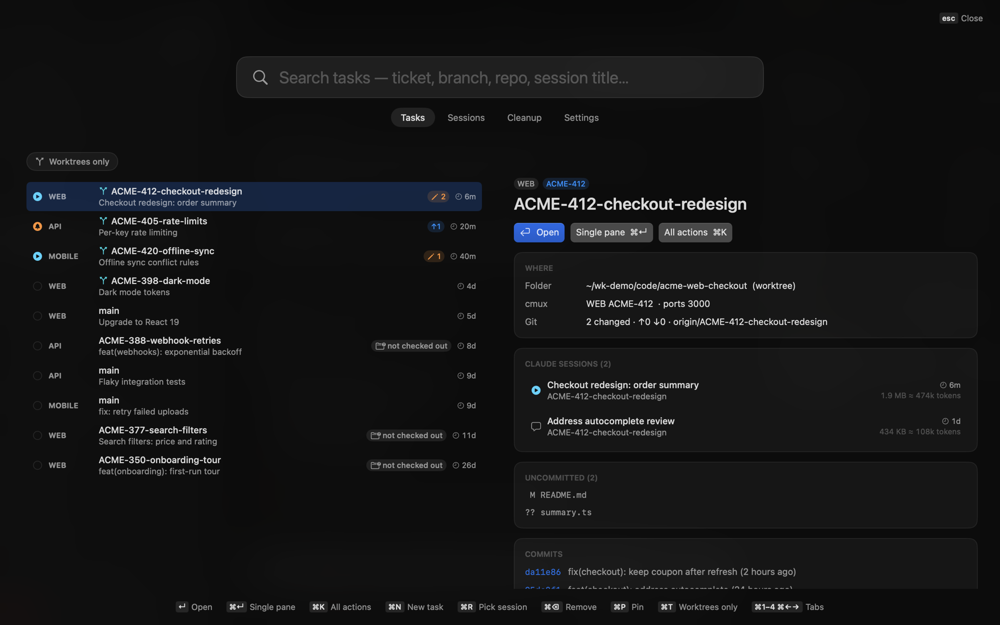
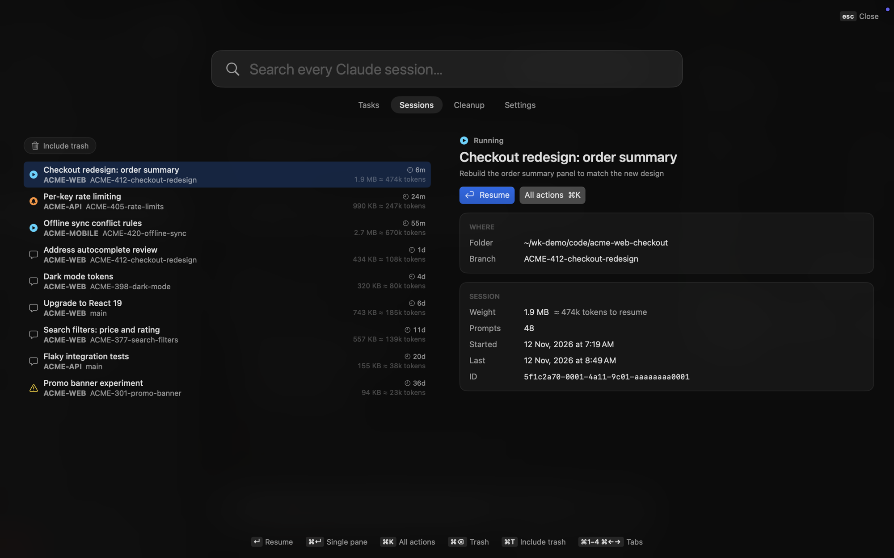
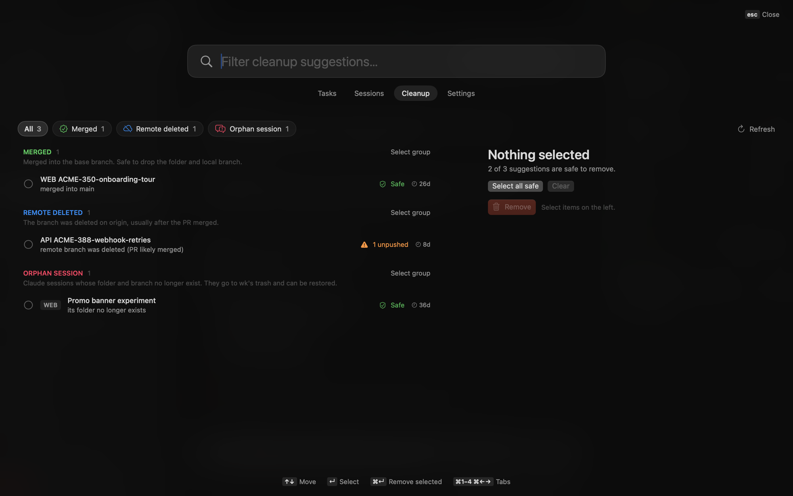

Jump back into any task.
A macOS menu-bar app + CLI for git worktrees and Claude Code sessions. Press ⌥Space, type a ticket, hit ↵ — you're back in that task with its Claude, server and git panes.
curl -fsSL https://raw.githubusercontent.com/devrashed01/wk/main/install.sh | shor brew install --cask devrashed01/wk/wk · or the DMG · macOS 14+, Apple silicon & Intel · free, MIT

What it does
One keystroke, any task ●
A full-screen switcher over whatever you're doing — even over full-screen apps, without switching Spaces. Search by ticket, branch, repo or session title.
Worktree-first
Every task gets its own folder. New branches become sibling worktrees with .env files copied and dependencies installed, so nothing disturbs what's already running. Worktrees are marked in the list, and ⌘T shows only them.
Claude sessions, found again
Every Claude Code session is indexed and searchable. Opening a task types claude --resume at the prompt — resuming costs tokens, so it waits for your Enter.
cmux layouts
Tasks open as a cmux workspace: Claude on the left, server and git on the right. Prefer one pane? ⌘↵. Running sessions are focused, not duplicated.
Guilt-free cleanup
Merged branches, deleted remotes, missing folders, stale tasks and orphaned sessions — grouped, explained, and safe by default. Anything with unpushed work needs explicit consent.
Light by design
A native Swift app over a small Go core. About 40 MB at idle, no polling — it watches the filesystem instead. The whole thing is open source.
More of it


Keyboard
| ⌥Space | open wk from anywhere (click the menu-bar icon works too) |
| ↵ | open the task — resumes its latest Claude session's workspace |
| ⌘↵ | open with a single Claude pane instead of the three-pane layout |
| ⌘K | every action for the selected task or session |
| ⌘N | new task — branch or worktree, set up and opened |
| ⌘R | resume a specific session of the task |
| ⌘T | filter the tab — worktrees only on Tasks, include trash on Sessions |
| ⌘1–4 ⌘←→ | switch between Tasks, Sessions, Cleanup and Settings |
| esc | back, then close — focus returns to where you were |